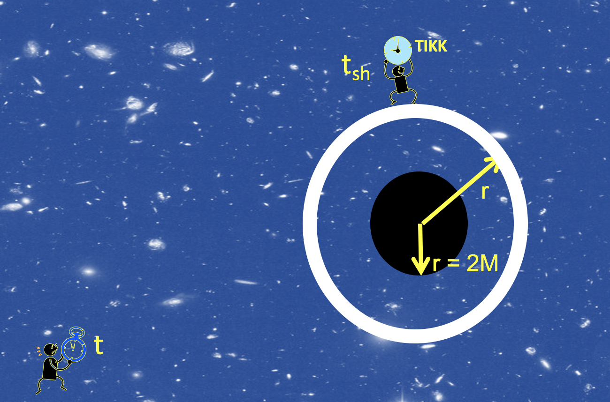

Forrige side🙂 🙁3 observatørerPADLET

Vi skal nå finne en sammenheng mellom tidsintervallet mellom de to tikkene på klokka til skallobservatøren. For skallobservatøren var tidsintervallet Δtsh mens langt-vekkobservatøren målte et tidsintervall Δt mellom de samme to tikkene på klokka til skallobservatøren. Akkurat som i spesiell relativitetsteori skal vi bruke at tidromsintervallet Δs er det samme for begge observatører. Dette er et universalt resultat. Vi har: $$\Delta s_\mathrm{sh}^2=\Delta t_\mathrm{sh}^2-\Delta r_\mathrm{sh}^2-r^2\Delta\phi_\mathrm{sh}^2\ \ \ \ \ \ \ \Delta s^2=\sst\Delta t^2-\frac{\Delta r^2}{\sst}-r^2\Delta\phi^2$$ Merk at “sh†står for “shell†altså skallobservatør. Merk også som vi akkurat har diskutert at skallobservatøren her bruker Δs for Lorentzgeometri mens lang-vekkobservatøren bruker ß-geometri.